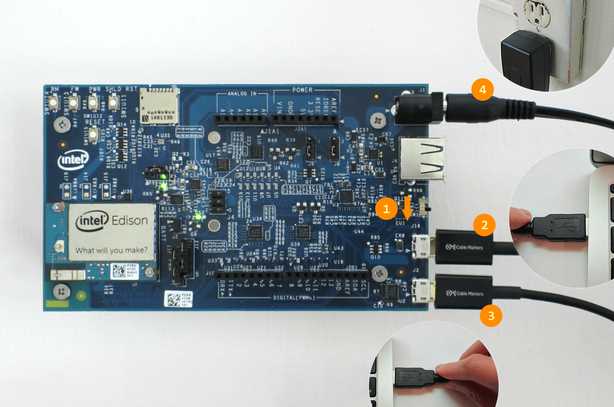

Unboxing and Assembly
Find out what is in your Intel® Edison Kit for Arduino box. Some assembly is required. ;)

Look in the Intel® Edison Kit for Arduino box

- Intel® Edison compute module
- Refer to the product brief for specs.
- Intel® Edison kit for Arduino expansion board.
- Software and hardware pin-compatible with Arduino Uno R3 shields. Refer to the hardware guide for specs.
- Small hex nuts (x2)
- For attaching the Intel® Edison module to the expansion board.
- Screws (x4) & plastic spacers (x4)
- To keep the expansion board stable and lifted off of surfaces.
Quick Start Assembly Instructions
Install the Intel® Edison module
The Intel® Edison module is meant to be used with breakout boards or custom PCBs. You will need to secure your Intel® Edison module to the Arduino expansion board before you can use it.
Install the plastic spacers
To add stability to the expansion board and to help avoid accidental short circuits, attach the four plastic spacers supplied in your Intel® Edison box to act as “legs” for the expansion board.
Example of a full development setup
While plugging in every cable is not required at this very moment, a development setup with serial communication for shell access would look like this:
(1) microswitch set to USB device mode (i.e. toggled down towards the micro-USB ports)
(2) device mode cable plugged into your computer (i.e. top micro-USB port)
(3) UART/serial cable plugged into your computer (i.e. bottom micro-USB port)
(4) Optional but recommended: connected to a DC power supply
Fully explore when and how to use all the cables ports on the Intel® Edison kit for Arduino in Connecting Cables.

Next Steps
Install software and drivers specifically for your computer’s operating system.
-
Mac or Linux user? Install the Flashing Tool:
-
Windows user?